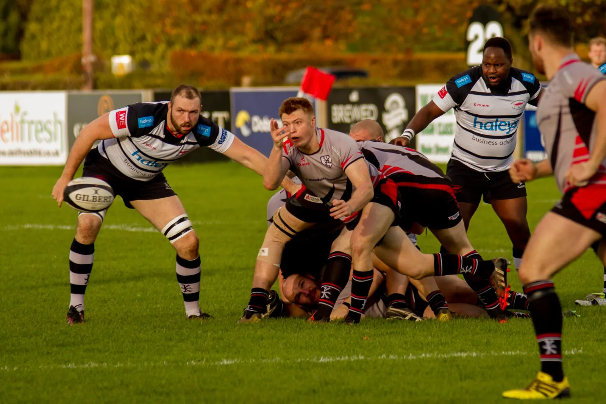

★ Featured
Leicester Tigers
Leicester, Leicestershire
One of England's most decorated clubs with 10 Premiership titles, playing at Mattioli Woods Welford Road since 1880.
View Profile
Every club in our UK rugby clubs directory has its own profile page, so fans and players can find a local club and where it plays in seconds.
Start with your county or city. Each area page lists every club we hold there, grouped by town.
Wales, Scotland and Northern Ireland: browse all rugby union clubs by nation →
Some of the best-known professional clubs in the directory. Click any card to view the full profile.
We list 637 clubs across all four UK nations. Because every club has its own page, you can compare locations and history side by side.
Each of our 637 clubs has its own profile page. There, you will find the club's location, history and the best way to get in touch.
Search by club name, town or county. Even if you misspell a name, the search still suggests the right clubs as you type.
Club profiles show the club badge where we have one. Every profile also links to Google Maps for directions.
We cover England, Scotland, Wales and Northern Ireland. So wherever you live, you can find UK rugby clubs close to home.
Club officials can claim their listing and send us corrections, contact details and a badge, so each profile improves over time.
Register your club for free and get your own profile page. That way, new players searching for rugby near them can find you.
To find a rugby club near you, search the directory by town, postcode area or county. Shortlist two or three clubs within easy reach of home or work, and check each club's profile for its ground and contact details. Then ask about the next training session. Most clubs let you try a session before joining.

Three things decide which rugby club suits you: distance, training night and level. Use this checklist:
A rugby union club plays the 15-a-side game, which is found in almost every UK town. A rugby league club plays the 13-a-side game, which is concentrated in Yorkshire, Lancashire, Greater Manchester and Cumbria. If you live in the North of England you may have both nearby, so check the code before you go.
| Rugby union | Rugby league | |
|---|---|---|
| Players per team | 15 | 13 |
| Clubs in our directory | 470 | 101 |
| Where it is strongest | Everywhere: the South, Midlands, Wales and Scotland especially | Northern England heartlands |
| Typical match day | Saturday afternoon | Saturday or Sunday |
| Browse | Rugby union clubs | Rugby league clubs |
Both codes run men's, women's and junior sections at many rugby clubs. If unsure, pick the club that is easiest to reach: you are far more likely to keep playing if training is 10 minutes away.
Our area pages group rugby clubs by city and county, so you can compare local rugby teams side by side. Each page lists every club we hold for that area, with the code it plays and a link to its profile. Pick the area nearest to you below, or search by town at the top.
| England: South | England: Midlands and North | Wales and Scotland |
|---|---|---|
| London | Birmingham | Cardiff |
| Surrey | Manchester | Edinburgh |
| Kent | Leeds | All Welsh clubs |
| Sussex | Hull | All Scottish clubs |
| Hampshire | Merseyside | |
| Essex | Cheshire | |
| Hertfordshire | Lancashire | |
| Bristol | Cumbria | |
| Gloucestershire | North Yorkshire | |
| Somerset | North East | |
| South West | Warwickshire |
You do not need any experience to join a rugby club. Community clubs run several adult teams so that new players get games at the right level. Many also run touch or walking rugby sessions. Bring boots, a gum shield and training kit, and tell the coach you are new.
What to expect in your first month:
Be aware: rugby is a contact sport. Good clubs coach safe tackling and follow the governing body's concussion protocols. Ask a club how it manages head injuries before you start.
Looking for something specific? See our guides to women's rugby clubs and junior and youth rugby.
Local rugby clubs in England mostly play in the Regional and Counties leagues, levels 5 to 7 and below of the RFU pyramid. Professional clubs play in PREM Rugby and Super League. Rugby league's amateur clubs play in the new National Community Rugby League and regional men's leagues.
Of the 267 English union clubs in our directory with a confirmed 2026-27 league:
That is the level of rugby most people mean when they search for a "local rugby team".
See how every competition fits together in our guide to rugby leagues in the UK, or read the English rugby union league structure.
The UK Rugby Club Directory is a free, independent list of rugby clubs and rugby businesses in England, Wales, Scotland and Northern Ireland. We check club details against official sources, including England Rugby's club pages, and update profiles when clubs tell us about changes.
How we keep listings accurate:
Spotted something wrong, or is your club missing? Register your club free or contact us.
To find rugby teams near you, search your town above and open the nearest club profiles. Most local rugby clubs run several men's teams, and many also have women's, junior and touch rugby sections. If your town has no club, open an area page to see nearby rugby clubs.
| Looking for | What to look for | Where to start |
|---|---|---|
| Men's rugby clubs near me | A club with 2nd and 3rd XVs, so new players get games | Rugby union clubs |
| Women's rugby | A women's or ladies' section, or a club with a development squad | Women's rugby clubs |
| Junior rugby | Mini and youth sections from under-6s | Junior and youth rugby |
| Rugby league | An open-age or masters team in the summer season | Rugby league clubs |
In practice, the best local rugby team for you is usually the one you can reach for midweek training. That holds for rugby teams UK-wide, from union clubs in Cornwall to league clubs in Cumbria. A club 15 minutes away beats a stronger club an hour away.
English rugby teams make up most of this directory: 353 rugby union clubs and 96 rugby league clubs in England. England rugby union teams range from the 10 PREM Rugby clubs to local Counties league sides, while rugby league teams in England are concentrated in the North.
The professional England rugby union teams are the PREM Rugby clubs: Bath Rugby, Bristol Bears, Exeter Chiefs, Gloucester Rugby, Harlequins, Leicester Tigers, Newcastle Red Bulls, Northampton Saints, Sale Sharks and Saracens. Every English rugby club below them is part of the same RFU league pyramid.
The 12 English Super League clubs in 2026 are Bradford Bulls, Castleford Tigers, Huddersfield Giants, Hull FC, Hull KR, Leeds Rhinos, Leigh Leopards, St Helens, Wakefield Trinity, Warrington Wolves, Wigan Warriors and York Knights. Hundreds more amateur rugby league teams play in the NCRL and district leagues.
Each UK nation has its own rugby governing body, and every club in our directory belongs to one of them. Use their official sites to check a club's affiliation, league or safeguarding contacts. Use this directory to compare rugby clubs near you and contact them directly.
Type your town or county into the search box at the top of this page, or open your area page. Each result links to a club profile showing where the club plays and how to contact it.
England Rugby counts well over a thousand affiliated rugby union clubs, and there are hundreds of amateur rugby league clubs as well. Our directory currently lists 454 English clubs: 355 union and 99 league. We add more each month.
Yes. Most community clubs welcome adult beginners and field several teams, so new players get games at a suitable level. Touch rugby is a good low-contact way to start.
Many clubs now run women's and girls' sections. See our women's rugby clubs guide to find one.
Yes. Searching the directory is free, and clubs can register a basic listing free of charge.
Search your town or county in the box at the top of this page, then open the nearest club profiles. Contact two or three local rugby teams and ask about training nights before you choose.
Yes. Most men's rugby clubs run several adult teams, so beginners can start in a 3rd XV or development side. Tell the coach you are new when you contact the club.
Open the area page for your county to see nearby rugby clubs, or search the next largest town. Most players travel 10 to 20 minutes to train, so nearby rugby clubs in the next town are worth a look.